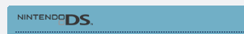
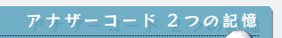
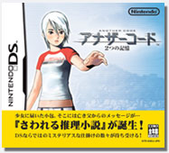
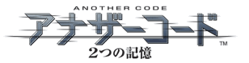
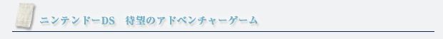
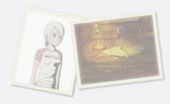
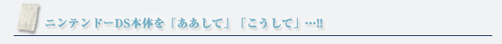
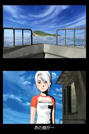
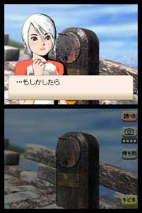

公式ホームページはこちら |
 |
ニンテンドーDSソフト
発売中
希望小売価格：4,800円(税込)
ジャンル：アドベンチャー
プレイ人数：１人 |

アドベンチャーゲームというジャンルそのものが大好きな人も多いのでは？ 探索したり、推理したり、ドラマを楽しんだりと、先を知りたいという気持ちでワクワクするのが編集長も大好きです。
しかも今回は特殊な仕掛けがあるとかないとか…
大きな期待と共に、ゲームを手に取りました！ |

スタートは主人公のアシュレイが『ブラッド・エドワード島』へ訪れる所から。叔母のジェシカと共に、死んだと思っていたパパからの招待状を持って複雑な気分で上陸します。進んで行くに従い、アシュレイが不安な気持ちになるのと同じように、だんだんプレイヤーも不安に…。展開が読めないので、なにが待っているのかちょっと怖くなってきます。ブラッド・エドワード島の雰囲気とも相まって、なんとも言えない寂しげな気持ちになっていくのです。怖いような不安なような…。
ストーリーが進んでいくと、パートナーである"D(ディー)"という少年のゴーストが合流。アシュレイは死んだはずのパパに会うため、彼は忘れてしまった記憶の謎を解くために、一緒に行動を開始するのですが、ところどころで記憶のカケラが集まり始めて謎の概要が少しずつ明らかに。でも、一気に全てがわかるわけではないので、そこがもどかしいというかなんというか…。早く知りたいという欲求で、とにかくどんどん先へ進みます。 |
 |
|  |
先に進むための謎解きには、様々な工夫が必要になります。従来のゲームとは全く違う解き方をするのが曲者で、知恵の輪を解くような脳の使い方に似ています。謎解きには『ニンテンドーDS本体そのものを使う』とでも言えばいいでしょうか、とにかく「"本体"を使って！」としか言えないのが悔しい！ 頭だけでなく、手を使ってああでもないこうでもないと試し、わかった瞬間の「あ…」という愕然とした驚き。あまりに驚いて、思わすポロリと本体を取り落としました…。ゲームの常識を根底から覆すプレイ方法で、まさに目からウロコ。「よくこんなことを考えたなあ…」と心底感動しました。
|
| 公式ページのムービーは、ゲームの雰囲気を掴むのにもってこい。しかも映画の予告編のように、それだけでも完成された壮大な作品のように仕上がっていて必見！ ぜひ見て下さいね。 |
|